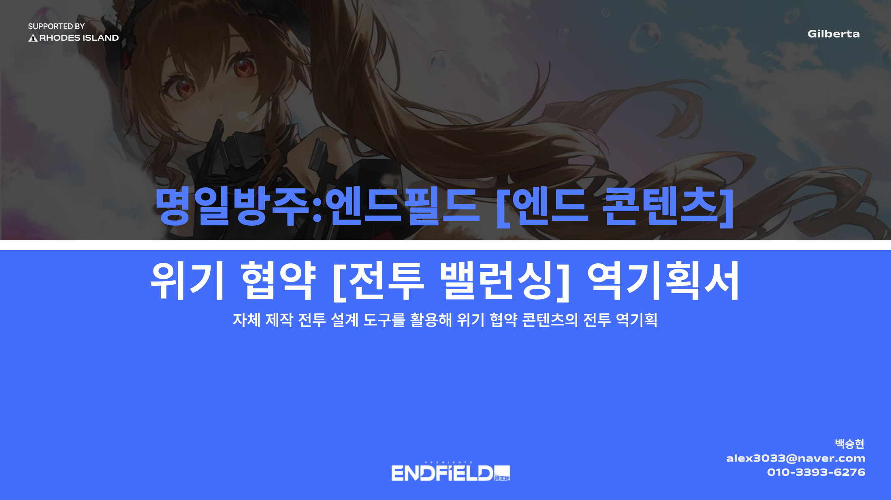
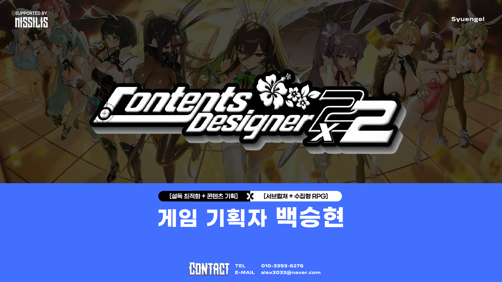
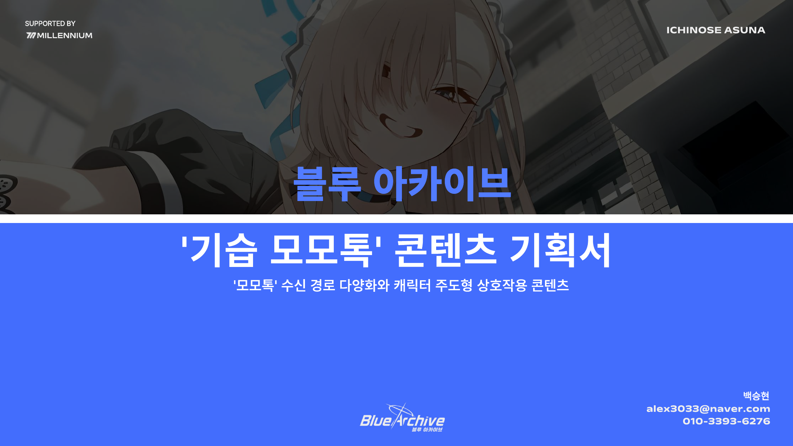
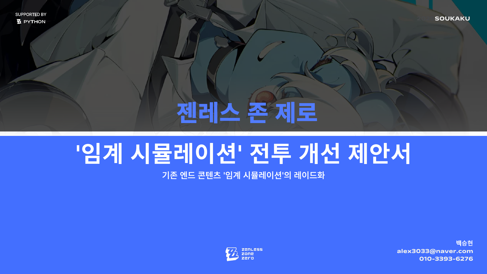
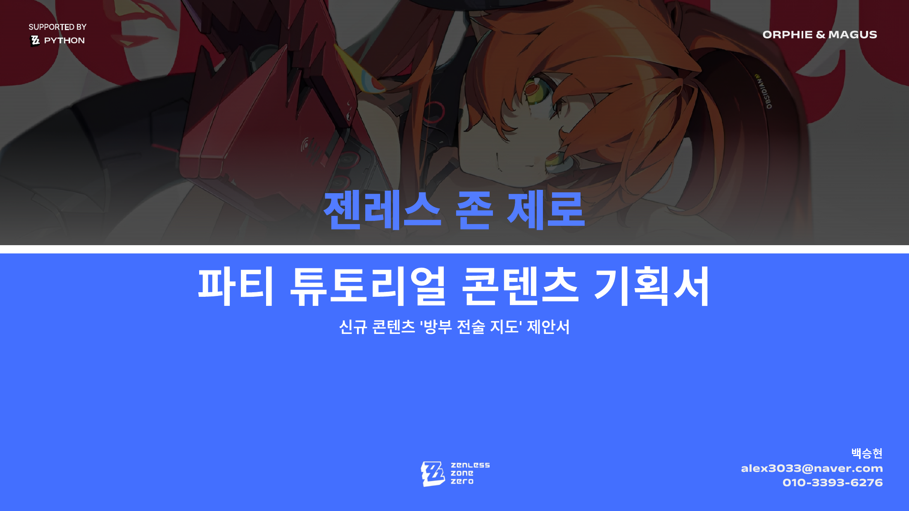
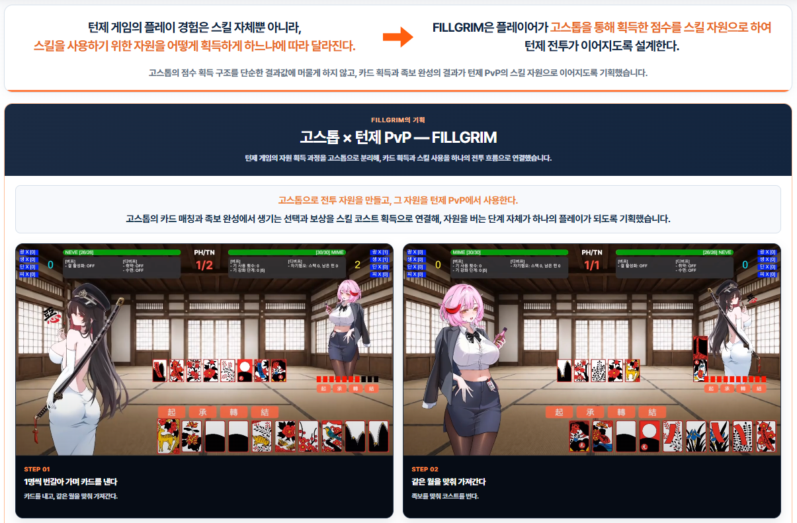
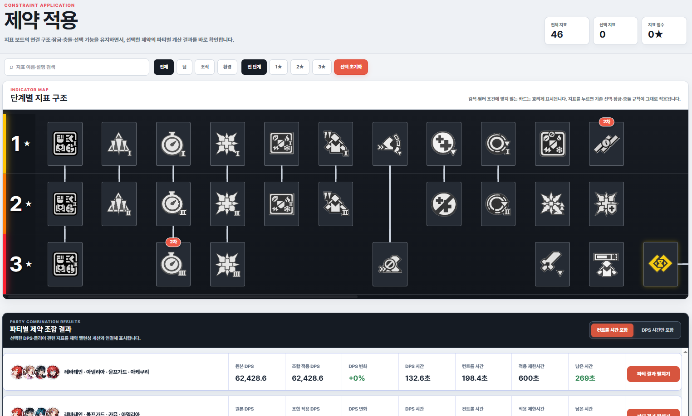

ARKNIGHTS: ENDFIELD
[전투 콘텐츠/밸런싱] [역기획] 명일방주 : 엔드필드
기존 엔드 콘텐츠와 전투·파티 구조를 분석해, 고정 파티 반복을 줄이고 조건에 따라 편성과 운용을 다시 고민하게 만드는 제약 선택형 엔드 콘텐츠를 역기획했습니다.
다양한 파티 표본을 기반으로, 스테이지 설계 및 제약들을 설계하였으며, 자체 제작 밸런싱 툴로 DPS·전투 시간·제약 점수와 조합별 영향을 수치로 검증했습니다.
GAME CONTENT DESIGN PORTFOLIO
콘텐츠로 캐릭터와 플레이어의 감정선을 연결하는 콘텐츠 기획자

SELF INTRODUCTION
서브컬처 게임을 장기간 플레이·분석한 경험과 일러스트레이터[4.4만 팔로워] 활동을 바탕으로,캐릭터의 매력을 콘텐츠를 통해 플레이어에게 전달하는 기획 관점을 학습해 정리했습니다.지원자의 게임 리스트, 기획 철학을 통해 어떤 자세로 게임 기획에 임하는지를 볼 수 있습니다.또한, 자체 밸런싱 툴 및 Unity 프로토타입 제작 사례를 통해 아이디어를 기획에 그치지 않고 직접 구현·검증하는 결과물들을 보여줍니다.

ARKNIGHTS: ENDFIELD
기존 엔드 콘텐츠와 전투·파티 구조를 분석해, 고정 파티 반복을 줄이고 조건에 따라 편성과 운용을 다시 고민하게 만드는 제약 선택형 엔드 콘텐츠를 역기획했습니다.
다양한 파티 표본을 기반으로, 스테이지 설계 및 제약들을 설계하였으며, 자체 제작 밸런싱 툴로 DPS·전투 시간·제약 점수와 조합별 영향을 수치로 검증했습니다.

BLUE ARCHIVE
카페·모모톡·인연 스토리 등 기존 캐릭터 상호작용 구조를 분석하고, 캐릭터가 먼저 연락하는 능동형 콘텐츠 ‘기습 모모톡’을 기획했습니다.
친밀도·관계 단계·상황 트리거에 따라 메시지가 발생하고 선택지에 따라 대화와 후속 이벤트가 달라지도록 설계해, 캐릭터별 말투와 관계성을 자연스럽게 체감하도록 구성했습니다.

ZENLESS ZONE ZERO
기존 ‘임계 시뮬레이션’의 반복적인 파티 운용과 전투 구조를 분석하고, STAGE·PLOT·FINAL의 3단계 레이드형 콘텐츠로 개선했습니다.
파티 밸런싱, 몬스터 배치, 추가 시간 기믹 등의 규칙과 UI 플로우를 함께 설계해 전투마다 다른 편성과 전술 선택이 필요하도록 구성했습니다.

ZENLESS ZONE ZERO
조작 설명 중심의 기존 튜토리얼을 보완해, 파티 역할·스킬 순서·전투 판단을 직접 연습하는 ‘방부 전술 지도’를 기획했습니다.
전투 튜토리얼이 1명의 캐릭터만을 대상으로 해 파티 운영 학습이 부족한 문제를 보완하고, 파티 단위의 스킬 사용 순서·전투 역할·연계 판단을 직접 익히도록 설계했습니다. 기존 보상 구조와 연습·재도전 흐름까지 연결해 초심자의 전투 진입장벽을 낮추는 튜토리얼 콘텐츠로 구성했습니다.

FILL GRIM · GAME DESIGN & IMPLEMENTATION
고스톱의 ‘점수’를 다음 턴 스킬 사용을 위한 코스트로 전환한 턴제 PvP 게임입니다. 카드 획득 → 족보 완성 → 코스트 획득 → 전투 스킬 사용의 반복 루프를 설계하고,
카드·스킬 데이터를 테이블화하여 정리한 뒤 ChatGPT Codex와 Unity를 활용해 실제 플레이 가능한 프로토타입으로 구현·검증했습니다.

END FIELD BALANCE LAB · WEB BALANCING TOOL
엔드 콘텐츠인 위기 협약의 제약 수치 밸런싱을 위해 제작한 웹 도구입니다.
파티 구성·스테이지 설계·제약 조합별 전투 성능을 비교해 밸런스를 검증하고, 특정 파티나 제약이 과도하게 유리한지 반복 확인할 수 있도록 구성했습니다.